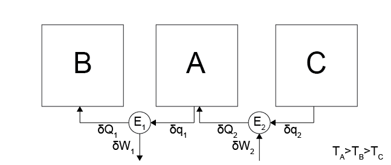
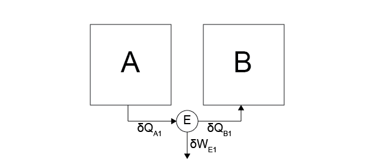
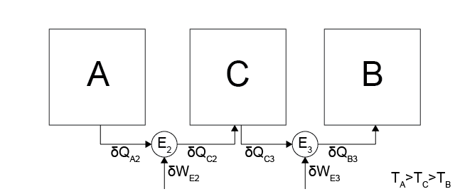
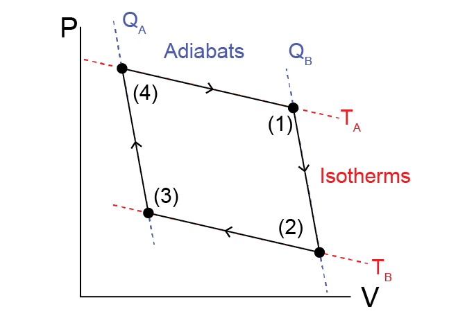
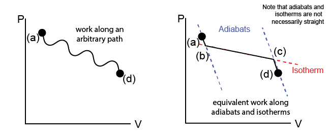

The Carnot Cycle and the Theorem of Clausius#
Additional Readings for the Enthusiast#
Tester and Modell [4], Ch. 4.3-4.5
Goals for Today’s Lecture#
What parameters determine the efficiency of a heat engine?
What is the Carnot Cycle and how does it define the upper bound for efficiency?
How do we determine the heat and work terms of an arbitrary process?
Efficiency of a reversible heat engine#
In the last lecture, we defined a heat engine as a closed device that returns to its initial state after it undergoes heat interactions with connected systems and work interactions with the environment. We further defined a reversible heat engine as one which is capable of undergoing completely reversible processes in which there is no net effect on the environment.
In effect, reversible heat engines can undergo heat and work interactions without dissipative losses due to friction or similar effects. We defined the efficiency of a heat engine in terms of a Case 5 process, in which heat is transferred to the engine and work is done on the environment, and a Case 6 process, in which work is done on the engine and heat is transferred to an attached hot system. As a reminder, Case 5 and Case 6 are illustrated below.
 Case 5
Case 5
 Case 6
Case 6
We used these processes to define the efficiency of the engine as:
We specifically found the bounds on the efficiency as:
Importantly, we found that for any reversible heat engine, \(\eta_5 = \eta_6 \equiv \eta\), indicating that both systems, the engine, and the environment return to their initial states after performing a cyclic process (i.e. Case 5 followed by Case 6). Finally, we note that a reversible heat engine is the engine capable of extracting the most work from Case 5 during a cyclic process. Therefore, a reversible heat engine is of particular interest since it maximizes the work extracted during cyclic processes (which will be relevant to the generation of power, for example, when considering the theoretical efficiency of power plants).
We have now established that reversible heat engines are of interest because they perform reversible processes, they maximize the work extracted from a system during the operation of Case 5, and they have the same efficiency between Case 5 and Case 6. This begs the question - what determines the efficiency of a reversible heat engine?
Here we will show that the efficiency of a reversible heat engine depends on the temperatures of the two connected systems. First, we will show that the efficiency cannot depend only on the temperature of the hot system

Consider operating the reversible heat engine shown above, where we have combined a Case 5 process between systems \(A\) and \(B\) with temperatures \(T_A > T_B\) and a process as in Case 6 between systems \(A\) and \(C\) with temperatures \(T_A > T_C\) (i.e. the environment does work on the engine and heat transfers from \(C\) to the engine to \(A\)). In total, the temperatures are set such that \(T_A > T_B > T_C\) so that the hot temperature is \(T_A\) for each process.
Why can’t \(\eta_{AB} = \eta_{BC}\)? This would be the case if efficiency was only a function of \(T_A\).
Show answer
If \(\eta_{AB} = \eta_{BC}\), we could run cycles in which heat is transferred from \(C\) to \(A\) with some input of work, then the same heat is transferred from \(A\) to \(B\) while the same work is extracted from the engine, since the efficiencies of the engines are the same. This process would lead to no net effect on the environment but a net transfer of heat from \(C \rightarrow B\), violating Postulate 2.
The efficiency of the reversible heat engines involved must be a function of both temperatures to prevent this scenario, or:
where \(f_1(T_A, T_B)\) is an undetermined function. We can further simplify this expression to eliminate the extracted work and place the efficiency only in terms of the heat transferred to each system, as Postulate 2 was broken by only considering work terms. We know from the first law of thermodynamics that \(\delta W_E = -(\delta Q_A + \delta Q_B)\), where
\(\delta W_E\) is negative because work is done by the engine on the environment,
\(\delta Q_A\) is positive because the process in Case 5 transfers heat from system \(A\) to the engine, and
\(\delta Q_B\) is negative because the process in Case 5 transfers heat from the engine to system \(B\).
We can express the preceding equation instead as:
\(f_2(T_A, T_B)\) is another undetermined function. We will next determine an expression for either \(f_1(T_A, T_B)\) or \(f_2(T_A, T_B)\) as a means of determining the bounds on efficiency.
Let us consider two distinct composite systems.#
Composite System 1

The first system is identical to the one considered in Case 5, and consists of a system \(A\) connected to a reversible heat engine \(E_1\) connected to a system \(B\), such that \(T_A > T_B\). During the process performed in Case 5, heat \(\delta Q_{A1}\) transfers from system \(A\) to \(E_1\), heat \(\delta Q_{B1}\) transfers from \(E_1\) to system \(B\), and work \(\delta W_{E1}\) is done by the engine on the environment.
Composite System 2

The second composite system has 3 subsystems, \(A\), \(B\), and \(C\), with two reversible heat engines, \(E_2\) and \(E_3\), with temperatures \(T_A > T_C > T_B\). Heat \(\delta Q_{A2}\) transfers from \(A\) to \(E_2\), \(\delta Q_{C2}\) transfers from \(E_2\) to \(C\), \(\delta Q_{C3}\) transfers from \(C\) to \(E_3\), and \(\delta Q_{B3}\) transfers from \(E_3\) to \(B\). Any heat transferred to \(C\) is immediately transferred to \(E_3\) so that there is no net change in the energy of \(C\). The second composite system is similar to the first other than the addition of the intermediate system \(C\).
If the two composite systems reduce the energy of \(A\) by an equivalent amount then the work done by \(E_1\) must be equivalent to the work done by \(E_2\) and \(E_3\); otherwise, one system would be run in reverse to create cyclic process in which the state of \(A\) is unchanged but work is extracted from the system, which requires that all the heat transferred from system \(B\) is obtained as work in the environment which is impossible. We can now use energy balances to equate the different defined quantities:
These relations all follow from either the problem statement, the discussion above, or an energy balance for the system (for \(\delta Q_{B1} = \delta Q_{B3}\)). Using the relation \(\frac{\delta Q_B}{\delta Q_A} = f_2(T_A, T_B)\), we can write for each engine:
We can now combine these relations and simplify according to the expressions above:
Two solutions satisfy this restraint: we can write either:
or
Arbitrarily choosing the latter option, we obtain:
This relation says that the efficiency of an arbitrary, reversible heat engine is related to some function of the temperatures of both connected systems, and the function \(f_4\) is a function of a single temperature only. We also know that the efficiency of a reversible heat engine acting between two systems at the same temperature must be single-valued (i.e., unique).
If I could have multiple reversible heat engines operating with two efficiencies between the same two temperatures, then I could imagine connecting two such heat engines, performing a high-efficiency Case 5 process to transfer heat from the hot system and do work on the environment, then performing a low-efficiency Case 6 process to do the same amount of work on the engine and transfer heat back to the hot system.
These two processes in series would have no net effect on the environment and by the definition of the efficiency more heat is transferred to the hot system in the Case 6 process than in the Case 5 process - the net result would be a transfer of heat from the cold system to the hot system which is impossible. Therefore, the efficiency of a reversible heat engine operating between two systems must be unique, and thus finding any functional form for \(f_3(T)\) or \(f_4(T)\) is sufficient to specify its efficiency (which is why our arbitrary choice of \(f_4\) is acceptable). In principle, we could determine this functional form by constructing a reversible heat engine, operating it, and measuring \(\delta Q_A\) and \(\delta W_E\) to obtain the efficiency.
The Carnot Cycle#
However, perfectly reversible heat engines are impossible to construct in practice, since real systems have friction and other dissipative losses of energy. Instead, we will conduct a thought experiment in which we construct a reversible heat engine using an ideal gas and show that this leads to a particularly simple form of the efficiency.
In this ideal cycle, we imagine a heat engine that operates between a hot system \(A\) at temperature \(T_A\) and a cold system \(B\) at temperature \(T_B\). We assume that the two systems are so large that heat transfers to and from them do not change their temperatures - they are thus heat reservoirs. The heat engine itself consists of an ideal gas that undergoes expansions and compressions via the action of a frictionless piston.

The ideal gas is initially held at a temperature \(T_A\) in state (1). The cycle consists of four steps:
(1) \(\to\) (2)
The heat engine is isolated from both systems A and B and expands
adiabatically and reversibly to a lower pressure. During this
expansion, the ideal gas does work on the environment and its
temperature lowers to $T_B$.
(2) \(\to\) (3)
The heat engine at temperature $T_B$ is then connected to system $B$
and the gas is isothermally compressed. During this compression,
work is done by the environment on the ideal gas and the gas
transfers heat to system $B$ at a constant temperature $T_B$.
(3) \(\to\) (4)
The heat engine is isolated from system $B$ and compressed
adiabatically and reversibly to the original pressure. The gas
returns to its original temperature $T_A$.
(4) \(\to\) (1)
The heat engine at temperature $T_A$ is connected to system $A$ and
the gas is isothermally expanded. During this expansion, work is
done on the environment and heat transfers from system $A$ at
constant temperature $T_A$ and the engine transitions
to the original state.
The total of these four steps leads to a net transfer of heat from system \(A\) to system \(B\) with work done on the environment - it is thus a Case 5 process. We refer to this cycle as the
- Carnot cycle#
The ideal cycle defined by a four step process of heat transfer and pressure-expansion work of an ideal gas. Determines the upper- limit for cycle efficiency
Using the ideal gas law, \(P\underline{V} = NRT\) and analyzing the various work and heat transfers during this cycle, it is possible to show that the efficiency can be written as:
What does the underline in \(\underline{V}\) refer to?
Click for answer
This is standard notation in thermodynamics for an extensive variable. Thus far, we’ve been using standard statistical mechanics notation, which often omits the underline. From hereon, we’ll be using the underline.
Proving this relationship will be performed in a problem set. This derivation leads us to a very simple form of the efficiency of a reversible heat engine. From this derivation, then, we have established that the efficiency of an idealized reversible heat engine is a function solely of the temperatures of the hot and cold systems that it connects; although a real heat engine will have a lower efficiency due to dissipation during its operation, the Carnot cycle efficiency puts an upper bound on the efficiency of any real heat engine.
Note that we could choose any fluid, not just an ideal gas, to place within the heat engine and undergo these processes and we would get the same result - the only difference would be the equations for the heat and work interactions along the isotherms and adiabats.
Theorem of Clausius#
The preceding discussion and derivations have established bounds on the efficiency of reversible heat engines, thus putting bounds on what processes are possible. We will next seek to generalize the idea of determining if a process is possible by re-defining the entropy. First, given our derivation of the efficiency of a reversible heat engine performing a Carnot cycle, we can now show:
\(\frac{dQ_A}{T_A} + \frac{dQ_B}{T_B} = 0\)
Show derivation
This relation again shows how the differential change in heat for a reversible heat engine is related to the temperatures of two connected systems.
Let us now consider a system similar to that of the Carnot cycle, in which we have a closed, reversible heat engine containing some material (which need not be an ideal gas). We assume that the system is able to reversibly expand and compress so that \(P-\underline{V}\) work can be done on the system and there are no other work terms.

We can imagine a process that changes the state of our system from state (a) to state (d) via some unspecified path that may involve a series of different events (e.g. adiabatic expansions/compressions, isothermal compressions/expansions, etc.) as in the Carnot cycle. We represent this path on a state diagram in the \(P-\underline{V}\) space (on the left).
Now, let us consider an alternative means of transitioning between state (a) and (d) along one specific path. First, we can draw the adiabatic paths on the state diagram that correspond to adiabatic expansions or compressions (recall: no heat is transferred during these processes) starting at either (a) or (d); following either of these paths alone does not guarantee that we reach (a) from (d). We can also draw isothermal paths on the same diagram, corresponding to isothermal expansions/compressions (recall: both heat and work can be transferred during these processes), such that these paths connect the adiabatic paths drawn previously. We define states (b) and (c) as the states on the adiabatic paths that are connected by an isothermal path. In this way, we define a connected series of adiabatic and isothermal processes which reaches the same state (d) as in the original process.
Now, we can analyze the transfers of heat and work along these two alternative processes. First, we know that the work along the real path (a) to (d) is given by:
or, in other words, the area under the \(P-V\) curve. We can choose the point (b) such that the work along the (a)\(\rightarrow\)(b)\(\rightarrow\)(c)\(\rightarrow\)(d) path is equivalent to the work along the real path, since the (b)\(\rightarrow\)(c) isotherm can connect many different pairs of points along the adiabatic paths and can be positioned freely. Since the change in energy between (a) and (d) is independent of the path chosen (according to the first law of thermodynamics), we then get that:
The last expression follows from the fact that \(\delta Q_{ab} = \delta Q_{cd} = 0\) by construction along the adiabatic paths. Together then, we see that we can decompose an arbitrary path into a series of isothermal and adiabatic paths and use this to deduce a relationship for the heat transfer between the two states along a specific isothermal path. This finding is generalized as the
- Theroem of Clausius#
Given any reversible process in which the temperature changes in any prescribed manner, it is always possible to find a reversible “zigzag” process consisting of adiabatic-isothermal-adiabatic steps such that the heat interaction in the isothermal step is equal to the heat interaction in the original process.